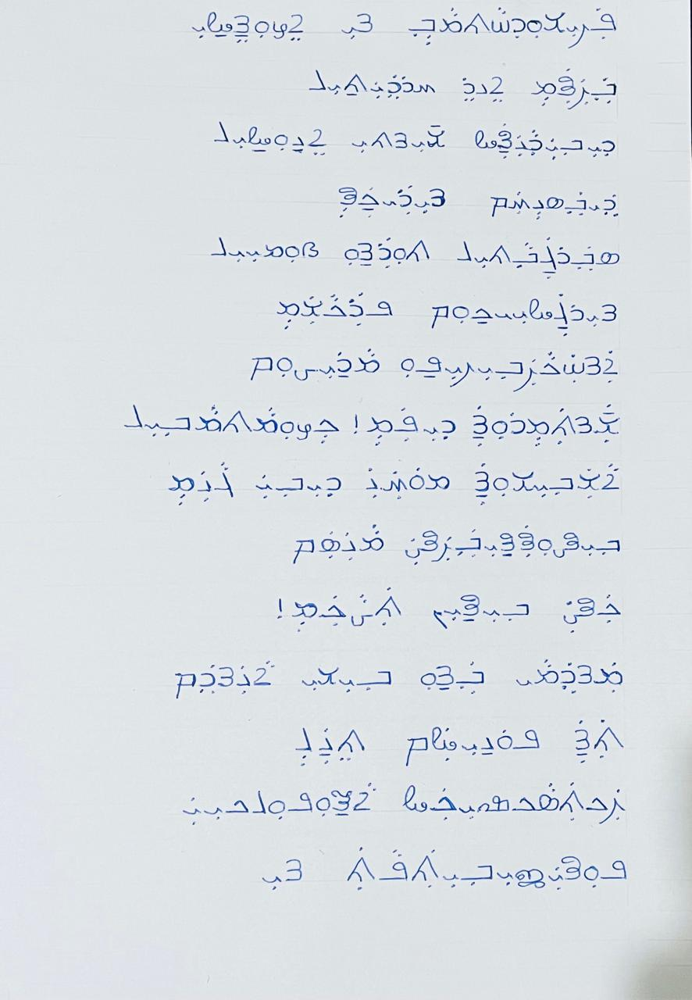
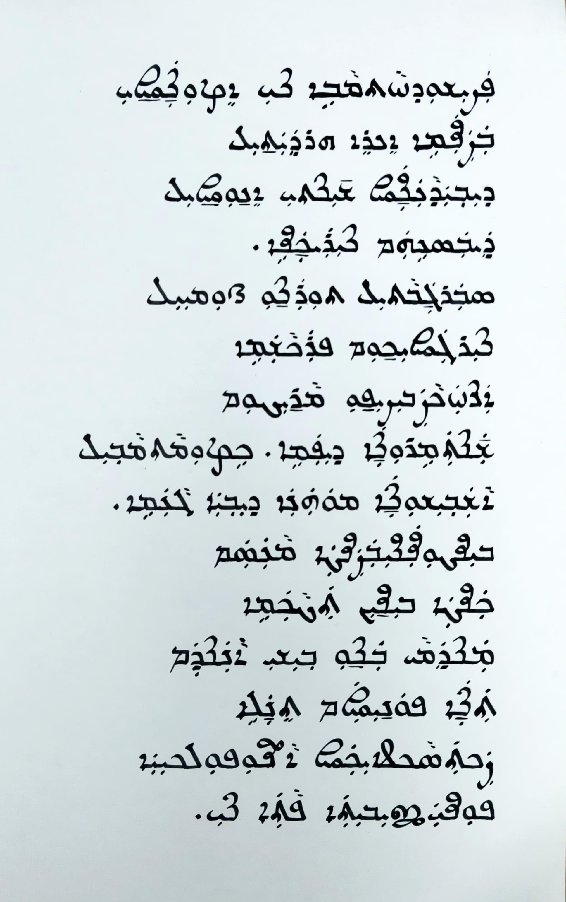

Parishudhathmave nee ezhunnalli
A Karshon (Suriyani Malayalam) rendering of the Malayalam hymn "Parishudhathmave nee ezhunnalli" with parallel text.
This Pentecost hymn, written by late Fr. Abel Periyappuram CMI and commonly sung in the Syro Malabar liturgy, is presented here with the original Malayalam text alongside its Syriac script rendering.
പരിശുദ്ധാത്മാവേ നീയെഴുന്നള്ളി
വരണമേ എന്റെ ഹൃദയത്തില്
ദിവ്യദാനങ്ങള് ചിന്തിയെന്നുള്ളില്
ദൈവസ്നേഹം നിറയ്ക്കണേ
സ്വര്ഗ്ഗ വാതില് തുറന്നു ഭൂമിയില്
നിര്ഗ്ഗളീക്കും പ്രകാശമേ
അന്ധകാര വിരിപ്പു മാറ്റിടും
ചന്തമേറുന്ന ദീപമേ
കേഴുമാത്മാവിൽ ആശവീശുന്ന
മോഹന ദിവ്യഗാനമേ
വിണ്ടുണങ്ങി വരണ്ട മാനസം
കണ്ട വിണ്ണിന് തടാകമേ
മന്ദമായ് വന്നു വീശിയാനന്ദം
തന്ന പൊന്നിളം തെന്നലേ
രക്തസാക്ഷികള് ആഞ്ഞുപുല്കിയ
പുണ്യജീവിത പാത നീ

Handwritten version of the hymn by Dr. Amel Antony

Calligraphy by Binu George, made using a Lamy Joy 1.9mm